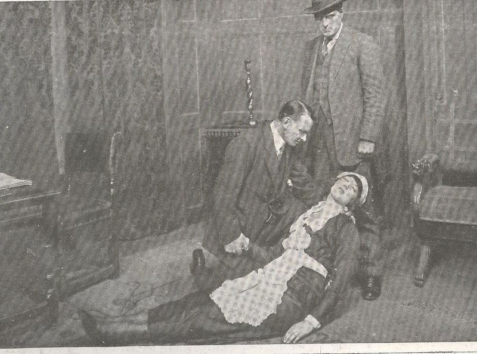

Saturday, May the 1st, 2010
back to: title, date or indexes
This, from Ptak Science Books, is simply magnificent:

M Maid Fainting
For the millions of Americans who were newly affluent in 1925 but not affluent enough to afford a fainting maid that they could attend to came the Maid Fainting Society Inc of America. Bonded in 15 states, MFSA sponsored overseas maids to faint in good American homes. They were hired out at $4/hour (a handsome hourly sum in 1925), the fainting maids being allowed to keep half. In 1926 a sub-cult of Extra-Tall Fainting Maids was born (an example of which is pictured above), and provided an income to thousands for several years. (One of the last silent films ever made, Fainting Maid Maiden, with Clara Bow, 1944, used this phenomenon as a basis for its story; by that time however the craze had passed, the war was on, and no one cared any more for silent films about fainting maids.)